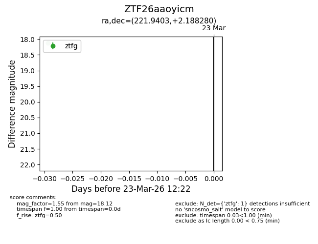
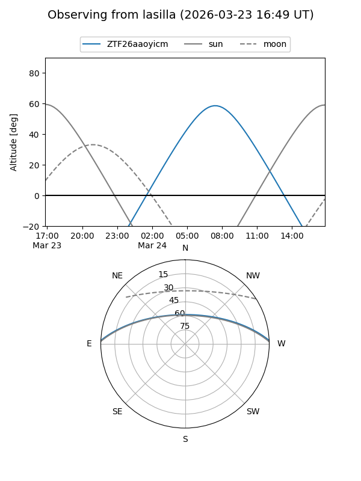
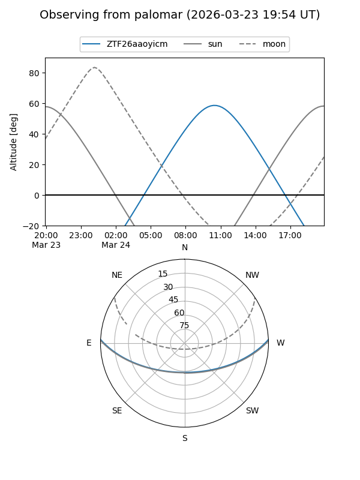

ZTF26aaoyicm
Target ZTF26aaoyicm at 2026-03-23 12:24
Aliases and brokers:
FINK: link
Lasair: link
ALeRCE: link
alt names
ZTF26aaoyicm (ztf,fink_ztf)
Coordinates:
equatorial (ra, dec) = 221.9403,+2.18828
equatorial (HMS+DMS) = 14:47:45.67,+02:11:17.81
galactic (l, b) = (356.0650,+52.62084)
Flags:
Photometry:
last ztfg=18.12
1 ztfg detections
Lightcurve

Visibility


Additional plots